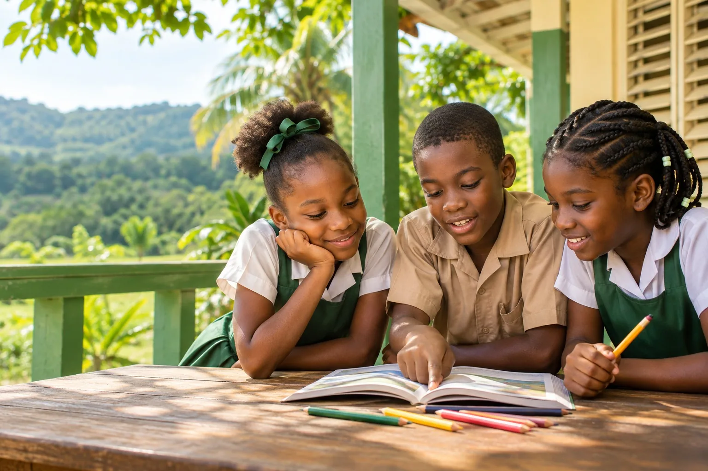

Gratitude
Recognize what we receive and express it through service.

Greater G.I.V.E. Foundation
Giving resources. Building capacity. Connecting children with education, nourishment, and the tools to grow.
Central Ohio roots.
A growing international mission.

The capacity to thrive
begins with the opportunity to learn.
Our name carries our purpose
“Giving back to the community will
inspire victory for everyone.”
Recognize what we receive and express it through service.
Make possibility visible through purposeful action.
Contribute time, knowledge, skills, and shared effort.
Build the capacity to provide, participate, and lead.
The purpose behind the giving
Greater G.I.V.E. transforms giving into organized action—empowering individuals and equipping youth with the intellectual and practical tools for nation-building.
Education, training, enterprise, and disciplined development prepare young people to provide for themselves, support their families, and strengthen the communities in which they live.
Guided by trust, hope, and love, our work connects immediate care with the capacity to create lasting change.
Discover what G.I.V.E. means ↓Annual community events
Practical resources. Local participation.
Care that returns throughout the year.
Learning essentials for children to begin the school year prepared and confident.
Portfolio coverage: 3 primary schools and 5 basic schools.
Food, care, and essential resources for elders and people with disabilities.
Recurring program reach reported in the Foundation’s March 2026 portfolio.
The quarterly feeding program provides breakfast and lunch to primary and basic schools across five parishes, supporting nutrition, attendance, and learning.
2026 · Giving in action
Back-to-school supplies and Christmas care packages connect education, service, and community.
Greater G.I.V.E. recognizes the donors, volunteers, and community supporters who contributed to the 2026 back-to-school supplies effort. Your gifts and shared work helped put learning resources into children’s hands.
With gratitude for every contribution of supplies, resources, time, and service.
Original campaign artwork; shown in recognition of the 2026 supplies effort.
The Christmas care-package campaign invites support for elders through food, toiletries, blankets, warm clothing, and essential care items.
Select the flyer to read the full campaign details. Confirm payment instructions directly with the Foundation before giving.
Original campaign artwork. Download the Christmas 2026 flyer.
Campaign artwork contains representative imagery and is distinct from the documentary photographs in our gallery.
Greater GIVE Foundation grew from Tri Village Soccer Association’s commitment to scholar-athletic development in Central Ohio.
Since 1995, annual initiatives have included college-transition scholarships for high schoolers, travel-soccer scholarships for youths with limited resources, and equipment donations to Colombia, Zambia, and Jamaica.
In 2024–2025, the board transitioned the organization to Greater GIVE Foundation and expanded its mission internationally. Education, youth sports, care, and assistance to those in need continue that tradition of service.
Recent accomplishments · 2022–2025
Reported accomplishments spanning the TVSA-to-GGF transition.
Strategic Impact & Project Portfolio, shared March 2026.
Service in action
Giving isEducation. Essential care.
Mobility. Community restoration.
Care packages for people facing hardship, plus five wheelchair donations supporting mobility and independence.
Education support reaches Spanish Town, St. Catherine, St. Thomas, and Kingston through school supplies and learning resources. Support also includes restroom toilets at Montego Bay Primary. Computers, sports equipment, and uniforms form part of the Foundation’s wider education and youth-development record.
A household toilet facility rebuilt and restored to improve sanitation and dignity.
Christmas support for families in West Africa through a partnership with Ramstein Middle School in Germany, and clothing and toys for earthquake victims in Turkey.
These are reported totals for the 2022–2025 completed-project period, spanning the TVSA-to-GGF transition; they are not lifetime totals since 1995. Individual project years are not assigned where the portfolio provides no event date.
The next chapter · 2026–2028 portfolio
Specific objectives and planning budgets.
Clear measures for the work ahead.
The following goals and estimates come from the Foundation’s project portfolio and goals timeline. They describe planned work; fundraising balances and completion status are not yet reported.
Showing 5 projects
210 students · 3 primary schools
Breakfast and lunch that support health, attendance, and readiness to learn.
Objective: Establish breakfast and lunch provision for 210 students in three primary schools.
Schedule: April 2026 planning milestone. These are planning dates, not confirmation of delivery.
Measure of success: Quarterly meal provision and student participation.
Student care infrastructure
A dedicated space for student well-being, safety, and psychosocial support.
Objective: Construct a guidance counselor office and sick bay at a primary school.
Schedule: February 2027 planning milestone. These are planning dates, not confirmation of delivery.
Measure of success: Completion of both facilities and readiness for student use.
Basic school / kindergarten
More capacity to prepare meals and support early childhood learning environments.
Objective: Enlarge a basic school or kindergarten kitchen to improve food preparation capacity.
Schedule: June 2027 planning milestone. These are planning dates, not confirmation of delivery.
Measure of success: Kitchen expansion and improved meal preparation capacity.
Community recreation infrastructure
Places for young people to learn discipline, participate, and develop together.
Objective: Resurface a netball court and improve a futebol field and track.
Schedule: 2026–2028 project portfolio. These are planning dates, not confirmation of delivery.
Measure of success: Completion of the listed resurfacing and field/track works.
10 learning spaces · 100 computers
Digital access, academic readiness, and practical skills for the future.
Objective: Establish ten computer labs/libraries with a total of 100 computers, desks, chairs, and supplies.
Schedule: February 2027 planning milestone. These are planning dates, not confirmation of delivery.
Measure of success: Learning spaces equipped and computers installed.
Planning milestones
Nutrition initiative and school-project budgeting in the planning timeline.
February: sick bay and computer labs. June: kitchen expansion.
Set the Foundation’s next five-year goals.
Planning milestones retained from the original timeline; elapsed dates do not establish project completion.
Sustainability through community capacity
Connect agriculture, education, enterprise, health, culture, and leadership as one interdependent ecosystem.
Kitson Town Food Cooperative is a proposed future project, not a currently functioning entity. The vision is a community-owned enterprise, supported by Greater G.I.V.E. through organizational structure, operational procedures, apprenticeship, and the transfer of existing community knowledge.
Education and practical training connect immediate support with the skills to sustain families and communities. School infrastructure remains a defined priority in the project portfolio.
Development initiatives are distinct from the completed-project record above. FC Wanderers is a separate affiliated futebol organization.
Giving, seen through our community
Real photographs from the Foundation’s existing gallery.
Select a photograph to view it in full.
Documentary project photographs reproduced from greatergivefoundation.org. Event dates and locations are not inferred from file upload dates. Visit the original gallery ↗
Our social philosophy
Truthful observation, shared responsibility, and interdependence guide how we give and how we develop. We are our brothers’ and sisters’ keepers in the collective march toward self-sufficiency.
Every contribution supports education, practical training, care, and community infrastructure.
Greater G.I.V.E. Foundation · Hilliard, Ohio. Giving inquiries support education, practical training, care assistance, and community infrastructure. Greater GIVE Foundation · EIN 31-1460452. The organization was incorporated as Tri Village Soccer Association on May 13, 1994, and changed its name on November 17, 2024. See the organization and giving information for tax-treatment details. Organization and public records.
Prefer a separate page? Open our donation campaign on Zeffy.
Donations are completed through Zeffy. Review your amount, any recurring schedule, and the final total in the form before submitting. Donation terms · Privacy notice
Our people · Our purpose
Stewardship rooted in service.
Trust, hope, and love guide the Foundation’s commitment to giving. Our leadership connects our Central Ohio roots with a growing international mission: education, practical opportunity, and care for children, elders, and communities.
Organization & public recordsUnited States
Greater GIVE Foundation
President
Vice President
Treasurer
Secretary
Board Member
Board Member
Jamaica
The following individuals are listed as proposed Jamaica branch directors. Formal appointments depend on applicable registration and governance requirements.
Proposed Branch Director
Proposed Branch Director
Proposed Branch Director
Proposed Branch Director
Connect with the Foundation about volunteering, community partnerships, or supporting our work.